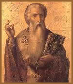
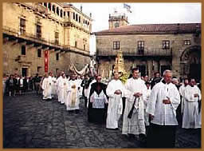
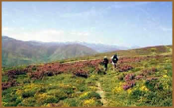

O Caminho de Santiago de Compostela
é uma rota secular de peregrinação religiosa,
que se estende por toda a Península Ibérica até
a cidade de Santiago de Compostela, localizada no extremo Oeste
da Espanha, onde se encontra o túmulo do apóstolo
Tiago.
Tiago
foi um pescador que vivia às margens do lago Tiberíades;
filho de Zebedeo e Salomé, e irmão de João
O Evangelista. Segundo a tradição, após a
dispersão dos apóstolos pelo mundo, Tiago foi pregar
o evangelho na província romana da Galícia, extremo
oeste espanhol. De volta a Jerusalém, o apóstolo
foi perseguido, preso e decapitado a mando de Herodes no ano 44.
Seus restos foram lançados para fora das muralhas da cidade.
Os discípulos Teodoro e Atanásio recolheram seu
corpo e levaram-no de volta para o Ocidente, aportando na costa
espanhola, na cidade de Iria Flavia.
O corpo do apóstolo foi sepultado secretamente
num bosque chamado Libredón. Assim, o local permaneceu
oculto durante oito séculos. Uma certa noite, o ermitão
Pelayo observou um fenômeno que ocorria neste bosque: uma
chuva de estrelas se derramava sobre um mesmo ponto do Libredón,
proporcionando uma luminosidade intensa. Tomando conhecimento
das ocorrências, o bispo de Iria Flavia, Teodomiro, ordenou
que fossem feitas escavações no local. Assim, no
dia 25 de Julho de (provavelmente) 813, foi encontrada uma arca
de mármore com os restos do apóstolo Tiago Maior.
A notícia se espalhou rapidamente, e o local
passou a ser visitado por andarilhos de toda a Europa a fim de
conhecer o sepulcro do Santo. A quantidade de peregrinos aumentava
intensamente a cada ano. Nobres e camponeses dirigiam-se em caravanas,
caminhando ou cavalgando em busca de bênçãos,
cura para as enfermidades, cumprir promessas ou apenas aventuravam-se
em terras distantes.
O rei Afonso II ordenou que no local da descoberta
fosse erigida uma capela em honra a São Tiago, proclamando-o
guardião e padroeiro de todo o seu reino. Em pouco tempo,
uma cidade foi erguida em torno daquele bosque, e denominada Compostela.
A origem etimológica do nome remete ao latim:
Campus Stellae, ou Campo das Estrelas, e assim
a junção final: Compostela.
No ano de 899, Afonso III construiu uma basílica
sobre o rústico templo erguido por seu antecessor. Porém,
oitos anos mais tarde, a basílica foi saqueada pelo árabe
Almanzor, que respeitosamente, preservou as relíquias do
apóstolo. Em 1075, iniciou-se a construção
da atual catedral, cinco vezes maior que a anterior.
Os Caminhos do
Caminho
O Caminho de Santiago possui - em sua maior parte
- um aspecto medieval. As catedrais góticas e românicas,
mosteiros e capelas, castelos e aldeias celtas distribuem-se ao
longo do percurso.
O apogeu das peregrinações ocorreu
nos séculos XII e XIII. As quatro principais rotas tiveram
origem neste período. Mesmo partindo de pontos diferentes,
todas entravam na Península Ibérica através
dos Pirineus. A partir de Puente la Reina o trajeto é o
mesmo, com exceção de alguns ramais secundários.
As rotas modernas iniciam-se também em cidades como Saint-Jean-Pied-de-Port,
na França.
A
partir do século XIV, houve uma sensível redução
de peregrinos que se aventuravam pelo Caminho. Porém, no
século XX o Caminho de Santiago foi "ressuscitado"
e voltou a ser umas das principais rotas religiosas da história.
Atualmente, é comum encontrar os peregrinos modernos, que
percorrem o Caminho de carro ou bicicleta, ou simplesmente aqueles
que visitam a Catedral e o túmulo do Apóstolo São
Tiago.
Geralmente, o viajante carrega consigo uma
concha (conhecida também por Vieira) que
possui vários significados. Segundo a lenda, um homem percorria
o Caminho a cavalo, quando repentinamente o animal disparou em
direção ao mar. O peregrino evocou Santiago, e uma
forte onda devolveu-o a terra firme. Retomada a consciência,
o peregrino percebeu que seu manto estava repleto de conchas.
Assim, a Vieira assumiu um significado de proteção,
que também está associada ao Graal. Simboliza,
para o viajante, absorver a sabedoria e a entidade de Cristo
como seu Eu Superior.
Durante todo o percurso, existem albergues instalados
em velhas construções medievais, destinados especialmente
a atender os peregrinos. Além de hotéis, pousadas,
e os próprios habitantes que cedem suas casas como abrigo.
O peregrino carrega consigo uma credencial, que deve ser carimbada
em igrejas ou no órgão de turismo correspondente
ao local. Munido de um mapa, o viajante também conta com
as discretas setas pintadas em rochas, muros e árvores,
que funcionam como um guia constante, e evitam que o aventureiro
se perca. Ao concluir o Caminho chegando à Catedral de
Santiago, o peregrino apresenta a credencial e recebe a Compostelana,
uma espécie de certificado de que todo o percurso foi concluído.
No
Brasil, a popularização do Caminho deve-se
principalmente ao escritor Paulo Coelho, que lançou
o livro O Diário de um Mago. Nesta obra,
o autor narra as experi-ências místicas vivenciadas
em sua peregri- nação em 1989. Além
de Paulo Coelho, a cantora Baby do Brasil escreveu Peregrina
– Meu Caminho no Caminho, onde também
é descrita sua trajetória até Compostela.
Mas a literatura brasileira abriga outros títulos
que servem de incentivo e preparação para
aqueles que se dispuserem a caminhar mais de 800 quilômetros
até a cidade de Santiago de Compostela, tombada pela
UNESCO como Patrimônio da Humanidade, em 1992.
Para ver as fotos do caminho de Santiago, clique
aqui.
Por
Spectrum